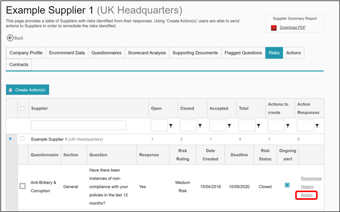
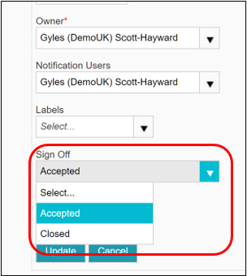

If you have created an action for a particular risk flag, then you will be able to click on the ‘Action’ link in order to view the details of that action. If a supplier has provided a response you will be able to see this within the action, and if necessary to respond. You are also able to sign off the action by selecting either ‘closed’ or ‘accepted’ from the drop down menu.
This will update the action status across Supply-Chain Sustainability (SCS), and update the risk management dashboard statistics accordingly.

